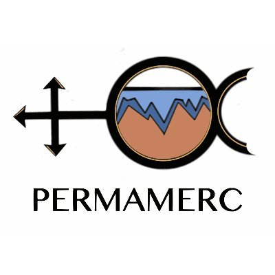

Projects
-
MICRO-FROST: Microbial Community Investigation of the Nitrogen and Mercury Cycle in Permafrost Environments
'la Caixa' Foundation ID 100010434
Grant Identifier: LCF/BQ/DI24/12070032
2024-2028
MICRO-FROST aim to understand the role of microbial communities in Nitrogen and Mercury cicle in permafrost environments in the Arctic by employing several 'omics approaches. MICRO-FROST will significantly contribute to the current knowledge of Hg biogeochemistry and Hg-related genetics and genomics.
-
EMPHATIC - E-DNA, Microbiomes, Photogrammetry and Hormones - Assessment Techniques in Cetaceans
European Commission, Fundación Biodiversidad, Fundação para a Ciência e Tecnologia, Agence Nationale de la Recherche, Ministry of Universities and Research
Grant Identifier: BiodivMon/0006/2022
2024-2027
The main goal of EMPHATIC is to provide tested monitoring tools, employing non-invasive, innovative, and complementary methodologies to assess cetacean distribution, diversity, and health status.
-

Mercury Biogeochemistry, Fate and Impact in Permafrost Thaw Ecosystems
Fundação para a Ciência e a Tecnologia
Grant Identifier: PTDC/CTA-AMB/4744/2020
2021-2024
PERMAMERC intended to contribute to the much-needed information for understanding the Hg cycle in permafrost thaw systems: from Hg methylation processes to gas exchange in permafrost thaw surface waters, and the key photochemical and microbiological processes involved. PERMAMERC contributed towards understanding the importance of permafrost thawing in the global Hg cycle and provided scientific based knowledge related to impacts on Arctic ecology, ecosystem services and human health.